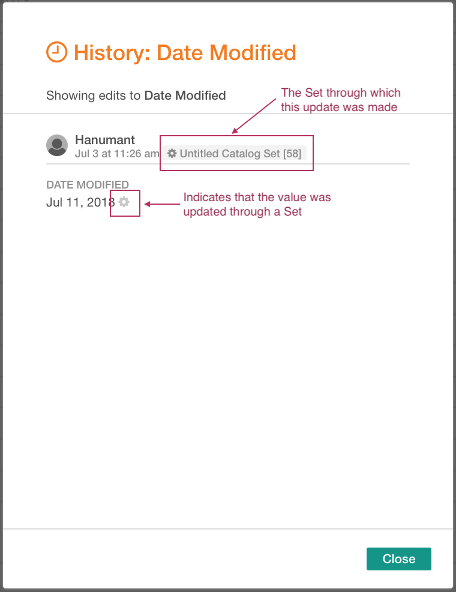

Viewing Field History¶
Alation Cloud Service Applies to Alation Cloud Service instances of Alation
Customer Managed Applies to customer-managed instances of Alation
Alation tracks and displays history of edits of the fields on catalog pages, such as Title, Description, Summary or Stewards. Some of these fields are permanent and always appear on catalog page templates, while others are Custom Fields that can be added or removed as necessary. Field values can be updated by users when they edit the fields manually or use a public API or upload a Data Dictionary; and by the system when specific system processes are run. Users can update fields for individual catalog objects or bulk-edit similar objects through Catalog Sets.
Note
In field history, there is no distinction between a manual edit by a user and a value change by the Data Dictionary upload.
Field history is available on pages of such objects as:
Data Source
Schema
Table
Column
File System
File
Catalog Set
API Resource
To view field history,
Sign in to Alation and open the catalog page of a data object.
Hover over the title of a field to reveal the Clock icon and click it to open the history of edits. History lists all the values that are applied to the field by users or the system and the time of the update. The edits appear chronologically, with the newest on top of the list.
Note
History of edits was not tracked before release 5.3.0 where it was introduced for the Table objects. In release 5.6.0, this functionality was extended to cover more object types. Thus, the field values migrated from older releases will be the starting point of field auditing in release 5.3.0 and onward.
{kind=link}
{kind=link}
Viewing Field History on Pages of Catalog Set Members¶
Descriptions and Custom Fields on catalog pages of objects included into Catalog Sets can be bulk-edited through the Set: when a value is updated for the Set, it is automatically propagated to all its members. In this case the history of edits will show which Catalog Set the value was set through. The propagated values are marked with the Gear icon:
{kind=link}
History of “Object Set” Type of Fields Updated Through Equivalence Sync¶
For Alation objects that are included into a manual Catalog Set, there is a way to synchronize custom fields on the “children” by toggling on Child Synchronization (Equivalence Sync). For Object Set type of Custom Fields, the history of edits will reflect such an update as replacement of all values.
Note
Field updates triggered by the Child Synchronization do not have a user identified for them in History because this process is run by the system.
{kind=link}
Restoring Single-Value Fields¶
For single-value Custom Fields, it is possible to restore an old value from the History of field edits.
Values Modified Directly¶
To restore an old value,
Hover over the title of the field and click the Clock icon to open the History.
Hover over the value you want to bring back and click Restore for this value. The old value will be returned to this field.
{kind=link}
Values Modified Through Sets¶
For objects included into Catalog Sets, the custom field values which are set through the Set can only be restored through this specific Set. You need to be assigned the role of Catalog Admin or Server Admin to change Catalog Sets.
To restore an old field value,
On the catalog page of an Alation object, click the Clock icon for the custom field you want to restore. The History of edits will open.
For the value to be restored, click the title of the Set. The Catalog page of this set will open.
Note
There are alternative ways to open the Catalog Set page. For example, you can find the list of catalog Sets that an object is a member of under Properties on the right side of the Overview tab. Also, you can hover over the Curate menu on the main toolbar and in the list that opens, click Catalog Sets then find the Catalog Set under All Catalog Sets. Additionally, you can use Search to find the Set.
Click Shared Fields to open the page template of the objects in the Set.
Find the Custom Field you need to change and click its Clock icon. The History of edits will open.
Click Restore for the old value you want back. The restored value will be propagated to all the members of this Set.